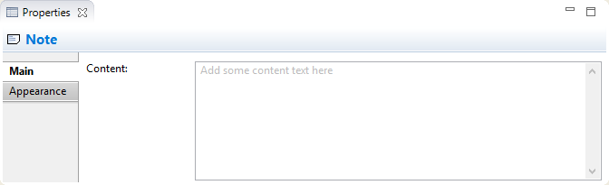
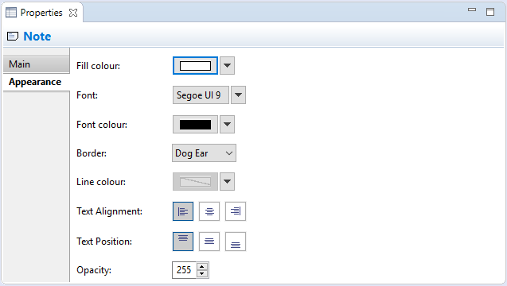

Selecting a Note in a View means that you can edit or view the following properties in the Properties Window.
The Main Tab
Editing the "Main" Properties for a Note
| Content: | The textual content for the Note |
The Properties Tab
For more information about creating and managing User Properties see User Properties.
The Appearance Tab
Editing the "Appearance" Properties for a Note
| Fill Colour: | Sets the fill colour for the selected object. The "Default" button sets the fill colour to the default setting. |
| Gradient: | Sets the direction used to draw the gradient fill of the selected element. Settings are "None", "Top", Left", "Right" and "Bottom". Note - gradients will not show when a diagram is exported in SVG image format. |
| Fill Opacity: | Set the fill opacity of the figure. Range from 0-255. |
| Line Colour: | >Sets the colour of the line used to draw the selected element. The "Derive from fill colour" drop-down option sets the line colour based on the fill colour. The "Default" drop-down option sets the line colour to the default colour as set in Preferences. If the "Default" drop-down option is not visible it is because line colours are derived from the element's fill colour, as set in the "Derive from fill colour" drop-down option. |
| Line Width: | Sets the width of the line used to draw the selected object. Options are "Normal", "Medium" and "Heavy". |
| Line Opacity: | Set the line opacity of the figure. Range from 0-255. |
| Border: | Sets the border type. Can be either "Dog Ear", "Rectangle" or "None". |
| Text Alignment: | Align text in the selected object to Left, Centred or Right. |
| Text Position: | Align text in the selected object to Top, Middle or Bottom. |
| Font: | Sets the font used for the text in the selected object. The "Default" button sets the font to the default setting as set in Preferences. |
| Font Colour: | Sets the colour of the font used for the text in the selected object. The "Default" button sets the font colour to the default setting. |
The Label Tab

Adding a Label Expression to display in the View
By default, a Note's text content will be displayed in the View in which it appears. Using a label expression, you can choose what is displayed for the Note. For example you may wish to display the Note's content and one or more of its properties.
For a full list of expression types please refer to the Archi Wiki.
The Image Tab

Image Properties for a Note
| Preview: | A preview image that shows how the image will appear. Double-clicking the Preview box will launch the Image Chooser dialog window. You can also drag and drop an image file from the desktop onto the Preview box. |
| Image: | Select an image for the object or clear the image. See "Adding Images to Objects" for more details |
| Position: | Sets the position of the image relative to the object. |